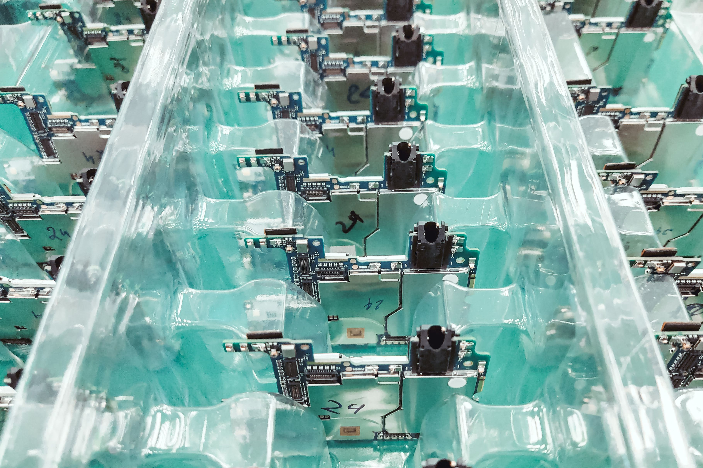

Connect electronic manufacturing operations with better control over component management, production planning, assembly, testing, quality and traceability.

Electronic manufacturing involves multiple operations including component handling, PCB assembly, soldering, inspection, testing, assembly and packaging.
LarchERP connects these activities through a unified manufacturing workflow, helping teams maintain production visibility, quality control, inventory accuracy and traceability.
Manage materials, assembly, inspection, testing and finished electronic products through connected manufacturing processes.
Plan electronic components and material requirements based on production schedules, customer orders and inventory availability.
Manage component placement, soldering and assembly operations across electronic manufacturing processes.
Track the integration of PCBs, electronic components, connectors and other assemblies into finished products.
Record inspection results and monitor defects, process deviations and quality performance.
Track functional testing and electrical test results before products move to final assembly or dispatch.
Complete final inspection, packaging, identification and dispatch with accurate production records.
Managing large numbers of electronic components, part numbers and material requirements across production.
Maintaining accurate component consumption and inventory visibility throughout manufacturing.
Maintaining consistent assembly, inspection and testing processes across production lines.
Identifying defects, rework and quality issues while maintaining production schedules.
Maintaining traceability between components, production operations, testing and finished products.
Bring production planning, inventory, quality, testing and traceability together within one manufacturing platform.
Manage production requirements, schedules, BOMs, material planning and manufacturing operations.
Manage electronic components, raw materials, work-in-progress and finished goods with improved inventory visibility.
Track inspections, defects, rejection, rework and corrective actions throughout the manufacturing process.
Record inspection and testing results while maintaining product quality and process compliance.
Connect components, batches, production operations, inspections and finished products.
Convert manufacturing data into useful production, quality, inventory and management reports.
Connect production information with operational dashboards to understand output, quality, inventory and testing performance.
Explore how LarchERP can support your electronic manufacturing, quality, inventory and traceability operations.
Book a Demo